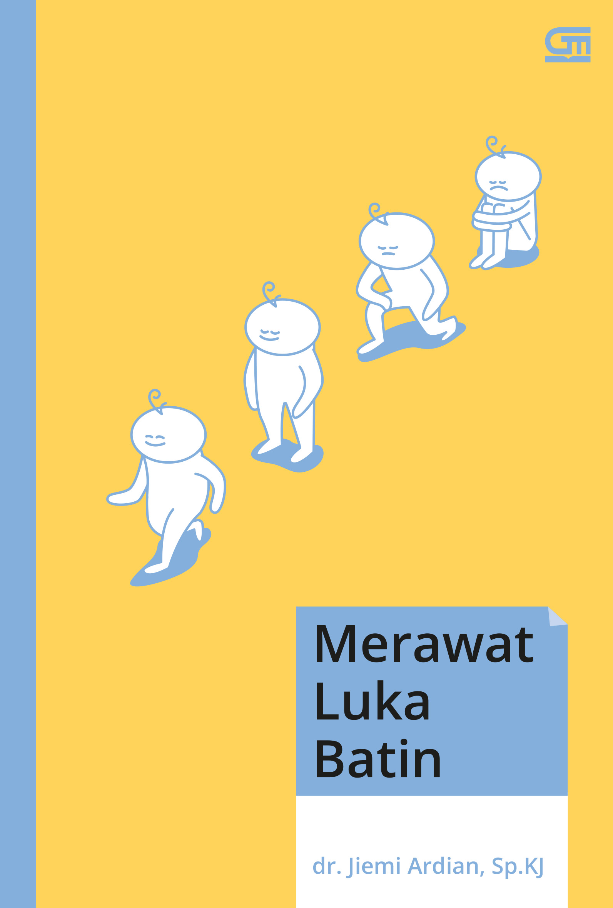
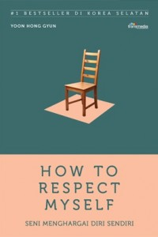

BUKU SELF IMPROVEMENT
UNTUK KAMU YANG MUDAH INSECURE
Self improvement adalah suatu bentuk pengembangan diri, khususnya potensi dan kemampuan dalam diri sehingga kita akan mudah untuk meningkatkan kualitas diri. Tak sedikit dari kita yang malah terfokus akan kekurangan atau kelemahan diri sendiri sehingga lupa untuk meningkatkan potensi diri dengan melakukan self improvement.
Padahal, suatu kelemahan atau kekurangan diri dapat ditutupi apabila kita terus meningkatkan kualitas diri kita sendiri. Dalam mengembangkan diri atau self improvement, dapat kita lakukan melalui bantuan seorang konsultan, pembimbing, mentor, ataupun melalui buku bacaan sekalipun. Nah berikut ada rekomendasi buku bacaan untuk kamu yang sering insecure.
1. Sebuah Seni untuk Bersikap Bodo Amat
Buku ini merupakan karya Mark Manson yang jadi best seller dan terlaris. Di mana, buku Sebuah Seni untuk Bersikap Bodo Amat versi bahasa Indonesia rilis pada tahun 2018 silam. Buku ini menceritakan kisah Harles Bokowski, seorang pecandu alkohol, penjudi, kasar, pelit dan tukang utang yang suka berjudi dengan wanita. Ia bercita-cita menjadi seorang penulis. Karya Bukowski secara selalu ditolak oleh hampir semua majalah, namun ia tidak menyerah dan terus menulis dan mengarang puisi.
Sukses tidak mengubah hidupnya menjadi lebih baik.
Baginya cuek dan masa bodoh adalah cara mudah untuk mengubah harapan hidup dengan memilih apa yang penting, karena hidup pada dasarnya hanyalah serangkaian masalah yang tidak pernah berakhir. Buku ini menceritakan kisah nyata hidupnya saat ia memiliki banyak masalah yang membuatnya lebih kuat dan mencapai tujuannya. Itulah mengapa bersikap bodo amat adalah kunci untuk menyelamatkan diri dan dunia, dengan tidak mengambil pusing ketika mempunyai masalah dan merasa buruk. Buku ini sangat cocok buat meningkatkan kualitas hidup menjadi lebih baik lagi.
2. Filosofi Teras
Filosofi Teras ditulis oleh Henry Manampiring rilis pada 2018. Dalam buku ini, menyajikan pembahasan tentang filsafat Stoisisme yang kemudian diterjemahkan menjadi filsafat teras. Filsafat ini merupakan filsafat Yunani-Romawi kuno yang diketahui berkembang pada 300SM-200M.
Hal yang menarik dari Filosofi Teras ini terletak pada tujuannya yaitu hidup dalam ketenangan dan terbebas dari emosi negatif. Oleh karena itu, pada setiap bab Filosofi Teras terdapat pelajaran yang diambil, salah satunya yaitu dalam menjalani kehidupan harus selaras dengan alam.
Dimana kehidupan berjalan sesuai kehendak pencipta-Nya dan selaras dengan alam itu berarti kita harus mengandalkan akal kita agar tidak terbawa arus yang menyimpang. Apalagi sekarang ini banyak di antara kita yang menggunakan medsos dan sering ditemui berita hoaks, sehingga kita tidak boleh terbawa emosi dan tidak baperan. Satu hal yang haru kita ingat, jangan terlalu memikirkan hal yang belum terjadi ke depannya, biarkan berjalan sebagaimana mestinya, namun tetap diiringi dengan effort supaya mendapat hasil yang maksimal.
3. Merawat Luka Batin

Buku ini berisi tentang pentingnya merawat luka batin yang mana bisa memengaruhi kehidupan seseorang. Batin yang terluka memang tak nampak namun jika dibiarkan begitu saja, pengaruhnya juga amat berdampak pada kehidupan seperti membuat kita menyalahkan diri, menyakiti diri dan sebagainya.
Dengan menawarkan tulisan yang ramah dibaca, penulis menyajikan pembahasan mengenai depresi dan luka itu sendiri untuk membentuk pola pikir yang sehat. Sehingga buku ini merupakan bacaan yang memaparkan kenyataan di depan wajah kita, tentang cara membentuk pola pikir yang tepat supaya kita tidak terus melukai diri sendiri.
Dr.Jiemi Ardian ingin mengajak kita terbuka dan paham tentang apa sebenarnya yang bisa kita lakukan. Dalam bukunya, Merawat Luka Batin penulis menyodorkan hal yang penting untuk kita perhatikan saat sedang terluka, supaya bisa menyikapinya dengan bijak. Tahapan supaya seseorang bisa merawat luka mereka sendiri adalah bagaimana kita mampu mengenali luka tersebut, dan kemudian menyembuhkannya.
4. Bicara Itu Ada Seninya
Selama ini, apakah ada yang pernah berpikir tentang sebenarnya bagaimana sih teknik berkomunikasi yang baik? Apakah dengan menggunakan nada yang menggebu-gebu? Atau justru dengan nada yang tenang namun tetap dengan artikulasi yang jelas? Bicara Itu Ada Seninya merupakan buku best seller terpopuler karya Oh Su Hyang seorang pakar komunikasi dari Korea. Saat mengetahui bahwa komunikasi menjadi salah satu hal yang sangat penting, Oh Su Hyang sebagai pakar komunikasi menuliskan buku yang sangat berarti bagi kita yang masih ingin belajar tentang ilmu dan teknik komunikasi.
Selain berisi mengenai pengembangan diri, buku tersebut juga membahas mengenai teknik komunikasi, negosiasi, dan juga persuasi.
di dalam buku “Bicara Itu Ada Seninya”, Oh Su Hyang sebagai penulis menjelaskan terkait rahasia menggunakan teknik komunikasi yang benar dan efektif yang mana bisa membuat lawan bicara merasa nyaman dan tidak bosan. Di mana, baik dari cara bertutur ataupun sikap kita dapat menentukan berhasil tidaknya sebuah komunikasi itu berjalan efektif.
5. How To Respect Myself

Dalam hidup yang kita jalani, seringkali kita merasakan berbagai emosi negatif. Sebab, memang begitu sifat alami kehidupan manusia. Hidup tidak hanya menawarkan kebahagiaan, tetapi kesedihan. Kita yang menjalani hidup tersebut terkadang menjadi tertekan atas semua yang kita alami. Marah, tidak nyaman, tidak bisa mengendalikan emosi dan pikiran, dan lain-lain.
Buku ini merupakan karya Yoon Hong Gyun seorang dokter spesialis kejiwaan asal Korea Selatan. Yoon Hong Gyun menuliskan buku ini dengan latar belakang pengalaman pribadinya menangani para pasiennya.
Terdapat banyak pasiennya yang memiliki keluhan tidak percaya diri, insecure, dan semacamnya.
Buku ini memuat penjelasan tentang cara untuk mengenal diri sendiri, menghargai diri sendiri, dan juga mencintai diri sendiri. Dalam buku How To Respect Myself, mengandung isi tentang langkah untuk membantu pembaca agar lebih percaya diri. Itulah rekomendasi buku self improvement terbaik yang wajib kalian baca. Sehingga bisa membantumu buat upgrade diri menjadi lebih baik lagi.
Informasi
lain mengenai buku self improvement di atas:
No.
Judul Buku
Pengarang
Tahun Terbit
Resensi Buku
1.
Sebuah Seni untuk Bersikap Bodo Amat (Judul Asli : The Subtle Art of Not Giving a Fuck)

 Filosofi Teras ditulis oleh Henry Manampiring rilis pada 2018. Dalam buku ini, menyajikan pembahasan tentang filsafat Stoisisme yang kemudian diterjemahkan menjadi filsafat teras. Filsafat ini merupakan filsafat Yunani-Romawi kuno yang diketahui berkembang pada 300SM-200M.
Hal yang menarik dari Filosofi Teras ini terletak pada tujuannya yaitu hidup dalam ketenangan dan terbebas dari emosi negatif. Oleh karena itu, pada setiap bab Filosofi Teras terdapat pelajaran yang diambil, salah satunya yaitu dalam menjalani kehidupan harus selaras dengan alam.
Filosofi Teras ditulis oleh Henry Manampiring rilis pada 2018. Dalam buku ini, menyajikan pembahasan tentang filsafat Stoisisme yang kemudian diterjemahkan menjadi filsafat teras. Filsafat ini merupakan filsafat Yunani-Romawi kuno yang diketahui berkembang pada 300SM-200M.
Hal yang menarik dari Filosofi Teras ini terletak pada tujuannya yaitu hidup dalam ketenangan dan terbebas dari emosi negatif. Oleh karena itu, pada setiap bab Filosofi Teras terdapat pelajaran yang diambil, salah satunya yaitu dalam menjalani kehidupan harus selaras dengan alam.
 Selama ini, apakah ada yang pernah berpikir tentang sebenarnya bagaimana sih teknik berkomunikasi yang baik? Apakah dengan menggunakan nada yang menggebu-gebu? Atau justru dengan nada yang tenang namun tetap dengan artikulasi yang jelas? Bicara Itu Ada Seninya merupakan buku best seller terpopuler karya Oh Su Hyang seorang pakar komunikasi dari Korea. Saat mengetahui bahwa komunikasi menjadi salah satu hal yang sangat penting, Oh Su Hyang sebagai pakar komunikasi menuliskan buku yang sangat berarti bagi kita yang masih ingin belajar tentang ilmu dan teknik komunikasi.
Selama ini, apakah ada yang pernah berpikir tentang sebenarnya bagaimana sih teknik berkomunikasi yang baik? Apakah dengan menggunakan nada yang menggebu-gebu? Atau justru dengan nada yang tenang namun tetap dengan artikulasi yang jelas? Bicara Itu Ada Seninya merupakan buku best seller terpopuler karya Oh Su Hyang seorang pakar komunikasi dari Korea. Saat mengetahui bahwa komunikasi menjadi salah satu hal yang sangat penting, Oh Su Hyang sebagai pakar komunikasi menuliskan buku yang sangat berarti bagi kita yang masih ingin belajar tentang ilmu dan teknik komunikasi.